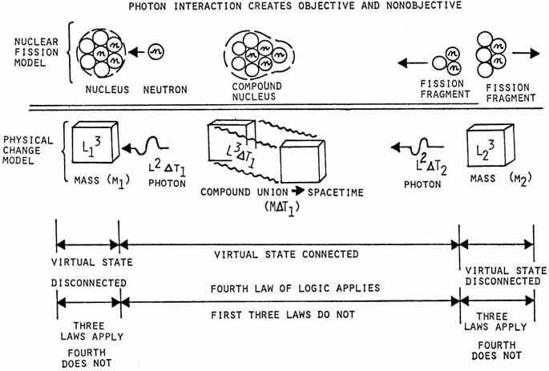

RAINDROP MODEL OF QUANTIZED CHANGE
| What does not appear to
have been realized to date in physics is that the photon interaction is
the agent that creates objectivity itself, as is clearly established by
the two-slit experiment. The photon interaction separates
spacetime into space and time exclusively. An object, being
something which occupies space (L3), is thus timeless.
Objects do not exist in time, because the union of an object with time
constitutes spacetime, which cannot be perceived, detected, or observed. Only changes in (derivatives of) spacetime can be perceived, detected, or observed, but not spacetime itself. That with which light has not interacted is not objective. This is proven conclusively by the two-slit experiment, upon which all of quantum mechanics rests. In that experiment, if an electron emitted from the cathode and on its way to the two-slit region does not interact with light, the electron behaves in a totally nonobjective manner, appearing to pass through both slits at the same time. (Actually it goes around both spatial slits in time, and since both of the slits occupy the same piece of time, the electron can interact timewise with both of them.) On the other hand, if the electron is struck by a photon before it reaches the two-slit region, it becomes a "hard, solid little baseball" and quite objective. In that case it can interact with (go through) only one spatial hole because it cannot interact in time. According to Feynman, this simple experiment contains the total and only mystery of quantum mechanics. Furthermore, it cannot be explained in any classical manner. No physicist in the world understands it, although the pattern of repeated electron strikes on a collecting screen is quite easy to compute by simple trigonometry. Let me now explain what happens to a mass when it is struck by a photon, absorbs the photon, and re-emits the photon. First, a mass is an L3 object; the concept of mass is not a function of time, but only a function of space. It is thus three-dimensional. The photon is also three-dimensional, but one of its dimensions is the time dimension. The photon, being built of action, is constituted of (ΔEΔT) or ( L2ΔT) dimensionally. When the photon strikes the mass and is absorbed, the (ΔE) portion is turned into mass by orthorotating one turn and becoming L3 dimensionally. The (ΔT) portion is thus united with the spatial mass to give a compound nucleus of space-time comprised of MΔT1. This compound nucleus of spacetime is not perceivable. When a photon is re-emitted, it may or may not be of the same frequency and energy as the previously absorbed photon, depending on the absence or presence of any other perturbations. At any rate, a small bit of L3 spatial mass is orthorotated to give an L2 intersection with the laboratory frame, which turns the bit of mass into a small piece of energy, ΔE. In the orthorotation, a small piece of time is bitten off and joined to the ΔE to give a ΔEΔT = h quantum of action, which now constitutes a photon. Photon emission thus strips away the time dimension, leaving a spatial object Einstein pointed out that the velocity of an object may be visualized as rotation of the object in higher dimensional space. Visualized as spatial rotation rather than rotation toward the time axis, the velocity of light in vacuum c merely constitutes the rotation of a piece of mass by an angle of 900 to the line of motion, in the laboratory space in which we visualize the photon (the rotated piece of mass) as moving Thus the photon emitted from the mass is moving at c the velocity of light, because of its orthogonal rotation to the laboratory frame Note that the spacetime compound nucleus has now once again been separated into spatial and time components. Time is moving with the photon. And that is why time moves or flows at c the speed of light in a vacuum. Time is carried only by the photon, and photon interaction with an object produces that object's march through time. If the emitted photon and the previously absorbed photons do not have identical ΔE and ΔT components, then M2 will be different from M1 and the mass will have increased or decreased. Considering the photon to consist of momentum and length components, i.e., (ΔpΔL) a similar diagram can be constructed. In that case, if the momentum and length components of the emitted and absorbed photons are identical, then M1 and M2 occupy the same position (M1 has not moved). If these components are different, then the mass M2 will occupy a slightly different position than mass M1 and the mass will have moved. This, by the way, is the simple solution to the age-old philosophical problem of change. We simply identify M1 and M2 calling them the same object. We cannot detect, perceive, or observe the compound nucleus of spacetime in the middle. Thus we experience change as a thing becoming something else, but still being the same thing. This totally defeats the first three laws of logic. However, fortunately we can easily comprehend it since we have developed the fourth law of logic. The raindrop model of quantized change is taken exactly analogous to the raindrop model of nuclear fission, as shown in Figure 9. |